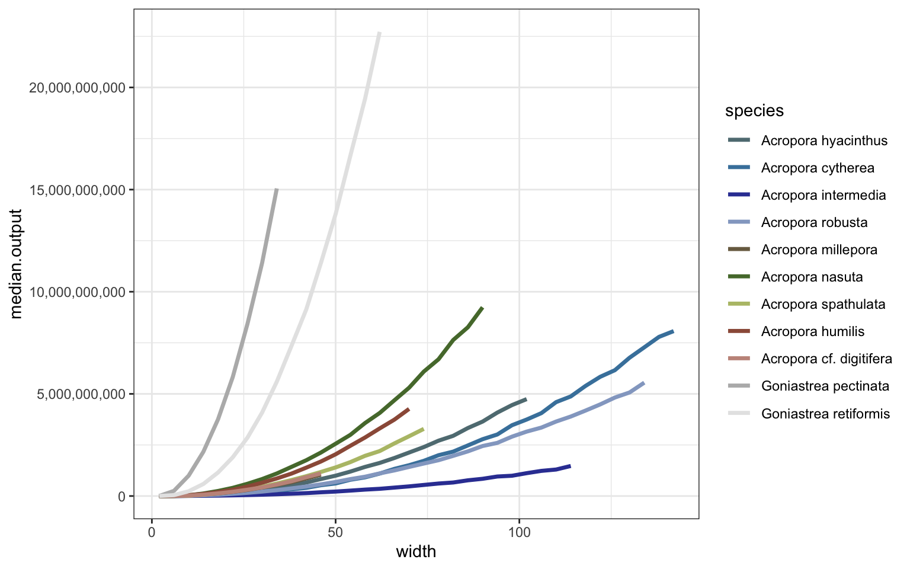

Bayesian models
1. Parameter estimates
All data sourced from Lizard Island corals via Álvarez-Noriega et al 2016 and Madin et al 2023.
Main data available with package as coralsize:
Code
library(tidyverse)
library(forcats)
library(units)
library(ggplot2)
library(fGarch)
library(brms)
sp_order <- c("Acropora hyacinthus", "Acropora cytherea",
"Acropora intermedia", "Acropora robusta",
"Acropora millepora", "Acropora nasuta", "Acropora spathulata",
"Acropora humilis", "Acropora cf. digitifera",
"Goniastrea pectinata", "Goniastrea retiformis")
sp_pal <- c("Acropora hyacinthus" = "#50676c", "Acropora cytherea" = "#3a6c8e",
"Acropora intermedia" = "#2c3687", "Acropora robusta" = "#7b8ca8",
"Acropora spathulata" = "#98a062", "Acropora millepora" = "#665a43", "Acropora nasuta" = "#48642f",
"Acropora humilis" = "#824b3b", "Acropora cf. digitifera" = "#a47c73",
"Goniastrea pectinata" = "#999999", "Goniastrea retiformis"= "#bfbfbf")
make_paler <- function(color) {
grDevices::adjustcolor(color, alpha.f = 1, red.f = 1.2, green.f = 1.2, blue.f = 1.2)
}
# Apply the function to the palette
sp_pal <- sapply(sp_pal, make_paler)
size_data <- coralsize |>
mutate(width=sqrt(area_cm2/pi)*2) |>
mutate(species=as.factor(species)) |>
mutate(species=fct_relevel(species,sp_order)) |>
mutate(growthform=fct_recode(species, "Tabular"= "Acropora cytherea", "Tabular"= "Acropora hyacinthus",
"Branching"= "Acropora intermedia", "Branching"= "Acropora robusta",
"Massive" = "Goniastrea pectinata", "Massive" = "Goniastrea retiformis",
"Corymbose" = "Acropora nasuta", "Corymbose" = "Acropora millepora", "Corymbose" = "Acropora spathulata",
"Digitate" = "Acropora cf. digitifera", "Digitate" = "Acropora humilis"))
ggplot() + theme_bw() + facet_wrap(~growthform, scales="free") +
geom_density(data=size_data, aes(width, fill=species, color=species), alpha=0.3, linewidth=0.6, show.legend=TRUE) +
theme(panel.grid = element_blank()) + ylab("") +
scale_color_manual(values=sp_pal) + scale_fill_manual(values=sp_pal)i. Colony size distributions
Data subset to 2011 (last datapoint) to predict size distributions:
plot the fitted distributions (yellow) against the raw data:
fitted_vals <- fitted(brm_sizedistribution, scale = "response")
size_data <- size_data |> filter(year==2011) |> mutate(fitted = fitted(brm_sizedistribution, scale = "response")[, "Estimate"])
ggplot() + theme_bw() + facet_wrap(~species, scales = "free") +
geom_density(data = size_data, aes(x = width), fill = "steelblue", alpha = 0.5, show.legend=TRUE) +
geom_density(data = size_data, aes(x = fitted), fill = "orange", alpha = 0.4, show.legend=TRUE) +
labs(
x = "Width",
y = "Density",
title = "Observed vs Predicted Distributions by Species"
)ii. Polyp-level fecundity
Predict the total number of oocytes per species * size:
Extract conditional effects:
Code
brm_fecundity_cond <- conditional_effects(brm_fecundity, effects = "width:species", dpar = "mu")
brm_fecundity_plots <- brm_fecundity_cond$`width:species` |> as.data.frame() %>%
mutate(species=fct_relevel(species,sp_order)) |>
mutate(growthform=fct_recode(species, "Tabular"= "Acropora cytherea", "Tabular"= "Acropora hyacinthus",
"Branching"= "Acropora intermedia", "Branching"= "Acropora robusta",
"Massive" = "Goniastrea pectinata", "Massive" = "Goniastrea retiformis",
"Corymbose" = "Acropora nasuta", "Corymbose" = "Acropora millepora",
"Corymbose" = "Acropora spathulata",
"Digitate" = "Acropora cf. digitifera", "Digitate" = "Acropora humilis"))
ggplot() + theme_bw() + facet_wrap(~growthform, scales="free_y") + ylab("oocytes per polyp") +
geom_line(data=brm_fecundity_plots, aes(width, estimate__, color=species), show.legend=TRUE) +
geom_ribbon(data=brm_fecundity_plots, aes(width, ymin=lower__, ymax=upper__, fill=species), alpha=0.2, show.legend=TRUE) +
scale_color_manual(values=sp_pal) + scale_fill_manual(values=sp_pal)iii. Colony-level fecundity
Predict the probability of fecundity per species (binary depending on colony size:
Extract conditional effects:
Code
#| class-source: fold-hide
#| message: false
#| warning: false
#| fig-width: 9.5
#| fig-height: 5
brm_probability_cond <- conditional_effects(brm_probability, effects = "width:species", dpar = "mu")
brm_probability_plots <- brm_probability_cond$`width:species` |> as.data.frame() %>%
mutate(growthform=fct_recode(species, "Tabular"= "Acropora cytherea", "Tabular"= "Acropora hyacinthus",
"Branching"= "Acropora intermedia", "Branching"= "Acropora robusta",
"Massive" = "Goniastrea pectinata", "Massive" = "Goniastrea retiformis",
"Corymbose" = "Acropora nasuta", "Corymbose" = "Acropora millepora", "Corymbose" = "Acropora spathulata",
"Digitate" = "Acropora cf. digitifera", "Digitate" = "Acropora humilis"))
ggplot() + theme_bw() + facet_wrap(~growthform, scales="free_y") +
geom_line(data=brm_probability_plots, aes(width, estimate__, color=species), show.legend=TRUE) +
geom_ribbon(data=brm_probability_plots, aes(width, ymin=lower__, ymax=upper__, fill=species), alpha=0.2, show.legend=TRUE) +
scale_color_manual(values=sp_pal) + scale_fill_manual(values=sp_pal) +
ylab("Probability of reproductive colonies") + xlab("Colony width")iv. Colony-level polyp density
Predict the probability of density of polyps per cm^2 per species:
brm_polyp_density <- brm(cm2 ~ species,
family = gaussian,
iter = 10000,
chains = 8,
cores = 11,
data=polyp_density_data)Extract conditional effects:
Code
# add a hack to get millepora, assume it's between millepora and nasuta
millepora <- polyp_density_data |> filter(species=="Acropora nasuta" | species=="Acropora spathulata") |>
mutate(species="Acropora millepora") |>
mutate(spp = "AM")
# rejoin
polyp_density_data <- polyp_density_data |> rbind(millepora) |>
mutate(growthform=fct_recode(species, "Tabular"= "Acropora cytherea", "Tabular"= "Acropora hyacinthus",
"Branching"= "Acropora intermedia", "Branching"= "Acropora robusta",
"Massive" = "Goniastrea pectinata", "Massive" = "Goniastrea retiformis",
"Corymbose" = "Acropora nasuta", "Corymbose" = "Acropora millepora",
"Corymbose" = "Acropora spathulata",
"Digitate" = "Acropora cf. digitifera", "Digitate" = "Acropora humilis"))
### data prep above for the brms model
brm_polyp_density_cond <- conditional_effects(brm_polyp_density, effects = "species", dpar = "mu")
brm_probability_plots <- brm_polyp_density_cond$species |> as.data.frame() %>%
mutate(growthform=fct_recode(species, "Tabular"= "Acropora cytherea", "Tabular"= "Acropora hyacinthus",
"Branching"= "Acropora intermedia", "Branching"= "Acropora robusta",
"Massive" = "Goniastrea pectinata", "Massive" = "Goniastrea retiformis",
"Corymbose" = "Acropora nasuta", "Corymbose" = "Acropora millepora", "Corymbose" = "Acropora spathulata",
"Digitate" = "Acropora cf. digitifera", "Digitate" = "Acropora humilis"))
ggplot() + theme_bw() + facet_wrap(~growthform, scales="free") +
geom_col(data=brm_probability_plots, aes(species, estimate__, fill=species),
color="black", alpha=0.5, linewidth=0.5, show.legend=FALSE) +
geom_errorbar(data=brm_probability_plots, aes(species, estimate__, ymin=lower__, ymax=upper__, fill=species),
width=0.05, color="black", alpha=0.8, linewidth=0.5, show.legend=FALSE) +
theme(axis.text.x = element_text(angle = 45, vjust = 0.9, hjust=0.8)) +
scale_color_manual(values=sp_pal) + scale_fill_manual(values=sp_pal) +
ylab(bquote('Polyps per'*~cm^2*'')) + xlab("")v. Colony-level reproductive area
Predict the proportion of coral area that is reproductive (not within sterile growth zone at borders):
Code
sterile_zone <- tibble(
species = c("Acropora hyacinthus", "Acropora cytherea", "Acropora cf. digitifera",
"Acropora humilis", "Acropora nasuta", "Acropora spathulata",
"Acropora millepora","Acropora intermedia","Acropora robusta"),
lower__ = c(0.760, 0.999, 0.773, 0.995, 0.970, 0.885, 0.885, 0.760, 0.760),
median = c(0.771, 1.000, 0.868, 1.000, 0.999, 0.913, 0.913, 0.771, 0.771),
upper__ = c(0.781, 1.000, 0.936, 1.000, 1.000, 0.941, 0.941, 0.781, 0.781)
) |>
mutate(growthform=fct_recode(species, "Tabular"= "Acropora cytherea", "Tabular"= "Acropora hyacinthus",
"Branching"= "Acropora intermedia", "Branching"= "Acropora robusta",
"Corymbose" = "Acropora nasuta", "Corymbose" = "Acropora millepora", "Corymbose" = "Acropora spathulata",
"Digitate" = "Acropora cf. digitifera", "Digitate" = "Acropora humilis")) |>
bind_rows(data.frame(species = c("Goniastrea retiformis", "Goniastrea pectinata"),
lower__ = c(1,1),
median = c(1,1),
upper__ = c(1,1),
growthform = c("Massive","Massive")))
ggplot() + theme_bw() + facet_wrap(~growthform, scales="free_x") +
geom_col(data=sterile_zone, aes(species, median*100, fill=species),
color="black", alpha=0.3, linewidth=0.5, show.legend=FALSE) +
geom_errorbar(data=sterile_zone, aes(species, median*100, ymin=lower__*100, ymax=upper__*100),
width=0.05, color="black", alpha=0.8, linewidth=0.5, show.legend=FALSE) +
theme(axis.text.x = element_text(angle = 45, vjust = 0.9, hjust=0.8)) +
scale_color_manual(values=sp_pal) + scale_fill_manual(values=sp_pal) +
ylab("Proportion colony reproductive") + xlab("")2. Simulate colonies
Combine vars to get total output per colony * species (data.table for predictions for speed):
Code
library(data.table)
# Set number of posterior draws
ndraws <- 5000
# Convert coralsize to data.table
coralsize <- as.data.table(coralsize)
# Step 1: Max width per species
maxwidth_dt <- coralsize[, .(maxwidth = max(width)), by = species]
# Step 2: Build species × width grid
base_newdf <- CJ(
species = unique(coralsize$species),
width = seq(2, 200, 4)
)
base_newdf <- merge(base_newdf, maxwidth_dt, by = "species")[width <= maxwidth][, maxwidth := NULL]
# Step 3: Repeat for draws
newdf <- base_newdf[rep(1:.N, each = ndraws)][, draw := rep(1:ndraws, times = .N / ndraws)]
# Step 4: Posterior predictions for each model
pp_polyp <- posterior_predict(brm_polyp_density, newdata = base_newdf, ndraws = ndraws)
pp_repro <- posterior_predict(brm_probability, newdata = base_newdf, ndraws = ndraws)
pp_oocytes <- posterior_predict(brm_fecundity, newdata = base_newdf, ndraws = ndraws)
# Step 5: Flatten predictions into long vector
newdf[, polypdensity := as.numeric(pp_polyp)]
newdf[, reproductive_probability := as.numeric(pp_repro)]
newdf[, oocytes := as.numeric(pp_oocytes)]
# Step 6: Sample sterile zone proportions
newdf[, sterile_proportion := sample_sterile_zone(species_vec = species, draw = "random")]
# Step 7: Calculate reproductive output
newdf[, area := pi * (width / 2)^2]
newdf[, colony_polyps := polypdensity * area * 10000]
newdf[, reproductive_polyps := colony_polyps * sterile_proportion]
newdf[, output := reproductive_polyps * oocytes * reproductive_probability]
# Step 8: Summarise posterior output
summary_dt <- newdf[, .(
median.output = mean(output),
lower.ci.output = quantile(output, 0.2),
upper.ci.output = quantile(output, 0.8)
), by = .(species, width)]
# Step 9: Add growthform and factor levels
summary_dt[, species := factor(species, levels = sp_order)]
summary_dt[, growthform := fct_recode(species,
"Tabular" = "Acropora cytherea",
"Tabular" = "Acropora hyacinthus",
"Branching" = "Acropora intermedia",
"Branching" = "Acropora robusta",
"Massive" = "Goniastrea pectinata",
"Massive" = "Goniastrea retiformis",
"Corymbose" = "Acropora nasuta",
"Corymbose" = "Acropora millepora",
"Corymbose" = "Acropora spathulata",
"Digitate" = "Acropora cf. digitifera",
"Digitate" = "Acropora humilis"
)]
ggplot() + theme_bw() +
geom_line(data=summary_dt, aes(width, median.output, color=species), linewidth=1.2) +
scale_y_continuous(labels = scales::comma) +
scale_color_manual(values=sp_pal) + scale_fill_manual(values=sp_pal)
Code
ggplot() +
theme_bw() +
facet_wrap(~growthform, scales = "free_y") +
geom_ribbon(data = summary_dt, aes(width, ymin = lower.ci.output, ymax = upper.ci.output, fill = species), alpha = 0.4) +
geom_line(data = summary_dt, aes(width, median.output, color = species)) +
scale_y_continuous(labels = scales::comma) +
scale_color_manual(values = sp_pal) +
scale_fill_manual(values = sp_pal) +
theme(legend.position = "bottom")